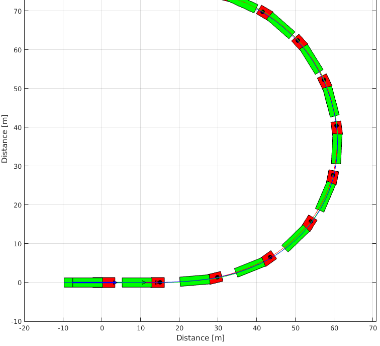

Running the Simulink model
sim('ArticulatedVehicleSimulink');Each vehicle state variable goes to a scope. And the output of the model is saved in workspace.
Results
To generate the graphics the same model used in ArticulatedVehicleSFunction.m must be defined.
% Choosing tire model TireModel = VehicleDynamicsLateral.TirePacejka(); % Defining tire parameters TireModel.a0 = 1; TireModel.a1 = 2; TireModel.a2 = 700; TireModel.a3 = 5000; TireModel.a4 = 80; TireModel.a5 = 0; TireModel.a6 = 0; TireModel.a7 = 0.6; TireModel.a8 = 0; TireModel.a9 = 0; TireModel.a10 = 0; TireModel.a11 = 0; TireModel.a12 = 0; TireModel.a13 = 0; % Choosing vehicle model VehicleModel = VehicleDynamicsLateral.VehicleArticulatedNonlinear(); % Defining vehicle parameters VehicleModel.mF0 = 5200; VehicleModel.mR0 = 2400; VehicleModel.mF = 6000; VehicleModel.mR = 10000; VehicleModel.mM = 17000; VehicleModel.IT = 46000; VehicleModel.IS = 450000; VehicleModel.lT = 3.5; VehicleModel.lS = 7.7; VehicleModel.c = -0.3; VehicleModel.nF = 2; VehicleModel.nR = 4; VehicleModel.nM = 8; VehicleModel.wT = 2.6; VehicleModel.wS = 2.4; VehicleModel.muy = 0.8; VehicleModel.deltaf = 0; VehicleModel.Fxf = 0; VehicleModel.Fxr = 0; VehicleModel.Fxm = 0; VehicleModel.tire = TireModel; simulator = VehicleDynamicsLateral.Simulator(VehicleModel, tout); % Retrieving states from Simulink model simulator.XT = simout.Data(:,1); simulator.YT = simout.Data(:,2); simulator.PSI = simout.Data(:,3); simulator.PHI = simout.Data(:,4); simulator.VEL = simout.Data(:,5); simulator.ALPHAT = simout.Data(:,6); simulator.dPSI = simout.Data(:,7); simulator.dPHI = simout.Data(:,8); g = VehicleDynamicsLateral.Graphics(simulator); g.TractorColor = 'r'; g.Frame();
g.Animation();
As expected the vehicle starts traveling in a straight line and starts a turn at \(t = 1 \, s\) because of the step function.